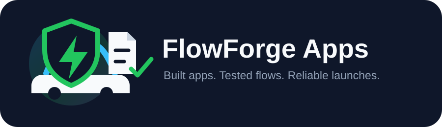
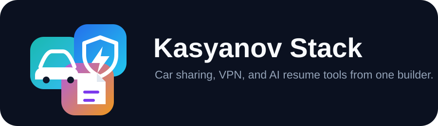
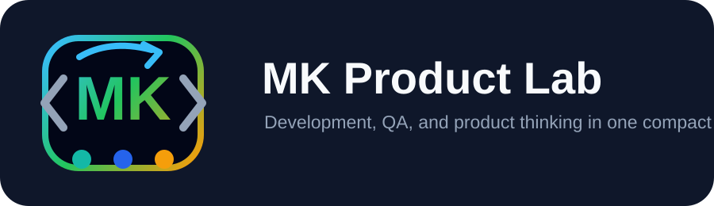
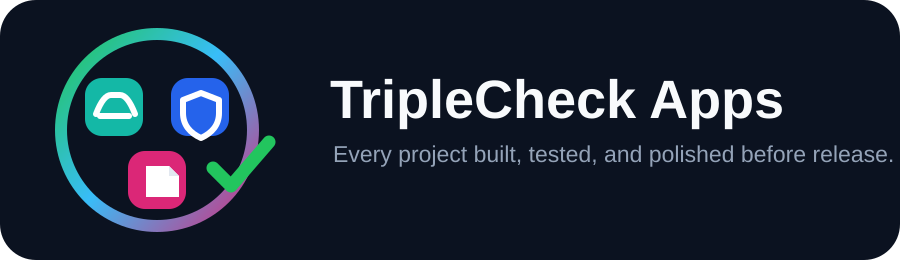

FlowForge Apps
I build mobility, VPN, and AI tools with clean flows, practical features, and QA-tested reliability.
Five logo directions connected to Razom Car Sharing, RushVPN, and Offer AI: Resume.

I build mobility, VPN, and AI tools with clean flows, practical features, and QA-tested reliability.

From car sharing to VPN and AI resumes, I turn product ideas into tested, user-ready apps.
I create secure, useful apps with smooth user flows, thoughtful logic, and hands-on QA testing.

Developer of car sharing, VPN, and AI resume products built with structure, testing, and care.

Apps for mobility, privacy, and AI resumes: designed, developed, and checked before release.